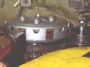

A bike that has stood for weeks can have its clutch plates stuck together. The lever is pulled, but the clutch does not release, so the bike lurches or stalls when put in gear. A bent or stuck release rod gives the same signs. This page finds out which it is and frees the clutch on a wet-plate (oil bath) clutch.
Safety
- Bike on a stand, engine off, in neutral, rear wheel clear of the ground for any test with the engine running.
- Do not run the engine with the clutch cover off.
- Drain the oil before removing the cover, or catch it. Oil on the floor and tyres is a fall risk.
- Clutch springs are strong. Release the spring bolts evenly.
You need
- Spanners and a screwdriver for the cover and spring bolts.
- A new gasket for the cover, a drain tray and clean engine oil.
- The adjustment details for your bike from the manual.
Steps
- Check the lever first. The cable must have the free play in the manual and move freely. Adjust clutch lever free play.
- Check any adjuster on the release mechanism at the engine. Where the clutch is released by a screw with a lock nut, loosen the lock nut, turn the screw in until it just stops with no free play, then turn it back about an eighth of a turn and lock it. Follow the manual if it differs. Screws can have left-hand threads.
- Look at the clutch rod. On many engines a rod runs through the gearbox mainshaft and passes near the front sprocket. Twigs and dirt thrown by the chain can bend it. If the clutch stops working suddenly, check the rod first before opening the clutch. Check also that a ball bearing between rod sections has not fallen out.
- If the plates are stuck, start the checks with the clutch lever pulled and the bike on a stand. Try shifting into first with the engine off and turn the rear wheel. If the wheel and engine turn together, the plates are stuck.
- Drain the engine oil. Remove the clutch cover. Take care of any thin washer on the kickstarter shaft: it often sticks to the cover. Put it back on the shaft later.
- Loosen the spring bolts evenly and remove the pressure plate. Lift out the plates in order and lay them on a clean cloth in the same order.
- If plates are stuck to each other, pry them apart gently with a screwdriver and oil them. Do not scratch the lining.
- Inspect: - Measure the thickness of each friction plate against the manual limit. If worn thin, replace the set. - Smell them. A burnt smell means replace. - Stand each steel and friction plate on its edge for flatness. Bent plates are replaced. - Check the tabs of the plates and the slots of the basket. Deep grooves from the tabs mean a worn basket.
- Soak new friction plates in clean oil for one to two hours before fitting. Coat reused plates with oil.
- Reassemble in the same order. Make sure the plate that carries the springs meshes with the basket, otherwise the springs will not press the plates together. Follow any arrows. Tighten spring bolts evenly to the manual torque.
- Refit the cover with a new gasket, the kickstarter washer and refill the oil.
- Readjust the clutch lever free play.
Check your work
- The clutch lever pulls smoothly and the clutch releases fully with the bike in gear on the stand.
- The bike does not creep with the lever pulled.
- Oil level is correct after the job and there is no oil leak at the cover.
If it did not fix the problem
- Plates are worn or burnt: Inspect and replace clutch plates and springs.
- The bike still drags with the lever pulled: Clutch drags.
- Gearbox still will not find neutral: Hard to find neutral.